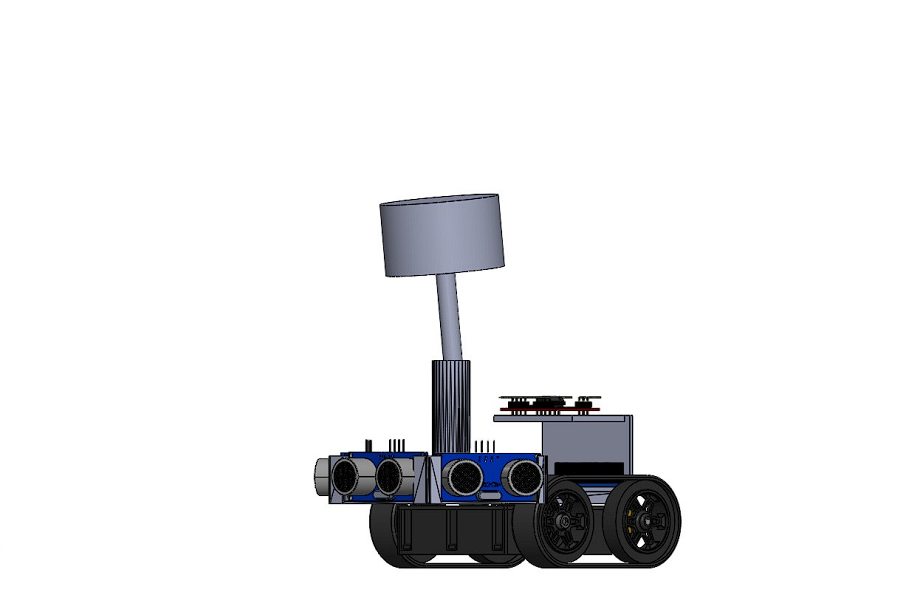

.Lidar_Robot()
#Project's main focus was to traverse territory to specified coordinates littered with unforseen obstacles
/*The robot is fitted with ultrasonic sensors that detect obstructions,
the circular float atop the device serves as a flag for the lidar sensor.*/
/*The design of the structure was created to prioritize center of mass to allow for abrupt and hasty movements of the robot,
allowing us to increase the speed on the motors without the risk of tipping.*/
/*This is an illustration of a possible track, featuring randomly placed obstacles and different targets that the robot must reach in an assigned order.
The lidar Sensor sends an infared laser which detects the float, and sends the coordinates of the detected object to a server,
the coordinates are then pulled by the robot from the server and plans for the next steps appropriately */
/*In this demonstration its apparent that more data is required in guiding the robot to achieve higher degree of accuracy.
1. Providing the robot with more ultrasonic sensors to predict a wider degree in front of the vehicle as it is "blind" in some areas.
2. Include a more accurate lidar sensor, as the one in testing was quite inaccurate at times confusing the robot as to its location which leaded it to being stuck in an area for far too long.*/